5. Módulo 5: Investigación de casos#
5.1. Objetivo - Módulo 5#
Duración: 10 min
Se detectan múltiples intentos fallidos de inicio de sesión desde diferentes países, seguidos de un inicio de sesión VPN correcto. Este es el escenario que identificaste al inicio del laboratorio. Tu trabajo es clasificar la amenaza, investigar usando un caso y ejecutar un playbook para bloquear al atacante.
Hallazgos esperados:
Compromiso de credenciales
patrón de acceso inusual desde múltiples geografías.
Resultado esperado:
Clasificar como True Positive.
Bloquear la IP de origen mediante un playbook.
5.2. Pasos - Módulo 5#
5.2.1. Triaje de la alerta#
Navega a Cases & Alerts / Alerts / Alert List.
Considera la columna Target User y filtra por el usuario:
student_XX
(e.g.
student_1) que te ha asignado tu instructor.Advertencia
No investigues a un usuario asignado a otro estudiante en este ejercicio: causará confusión y hará que los laboratorios fallen.
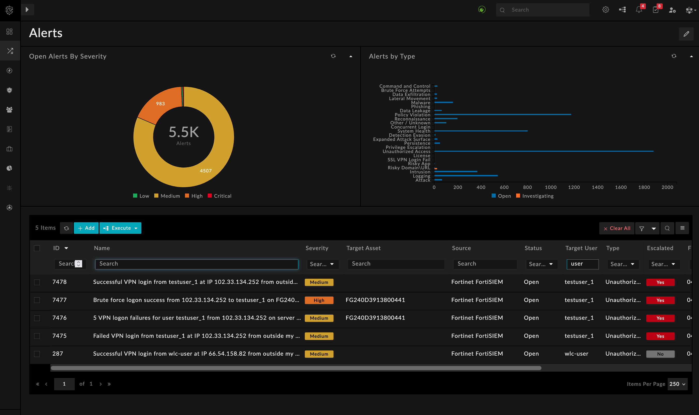
Lista de alertas filtrada por el usuario de destino asignado
La columna Escalated debería mostrar Yes: esto significa que ya se ha creado un caso. Selecciona la alerta de inicio de sesión VPN correcto, por ejemplo:
Successful VPN login from student_XX at IP 102.33.134.252 from outside my country
Advertencia
La dirección IP puede ser diferente en tu entorno.
Haz los siguientes cambios en la alerta:
Severity: High
Assigned to: you
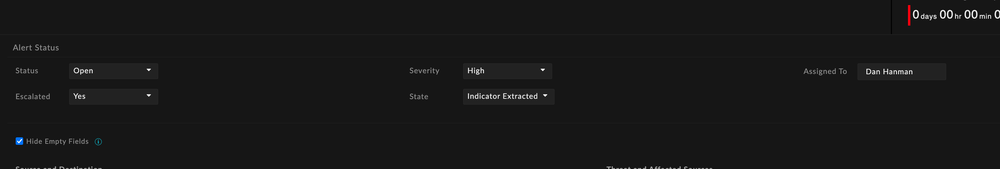
Campos de severidad y asignación de la alerta
Desplázate hasta la parte inferior de la pantalla y revisa los indicadores extraídos. Expande un indicador de dirección IP externa para revisar la valoración.
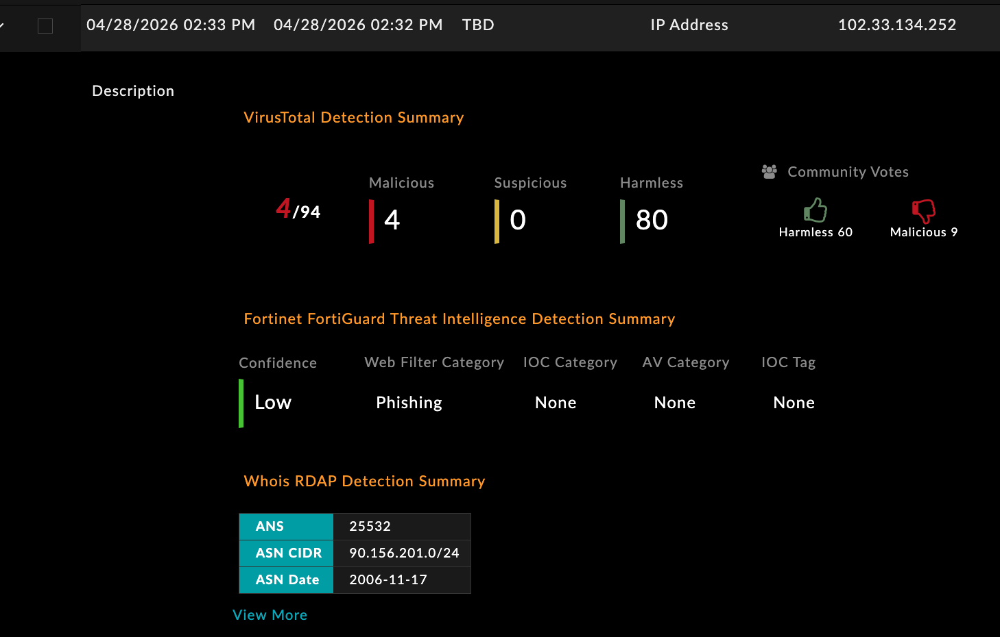
Indicadores extraídos con la valoración expandida
Si solo ves el resultado de FortiGuard Labs, selecciona la dirección IP y elige Get Latest Reputaton en el menú Execute. Después de un minuto, comprueba el resultado.
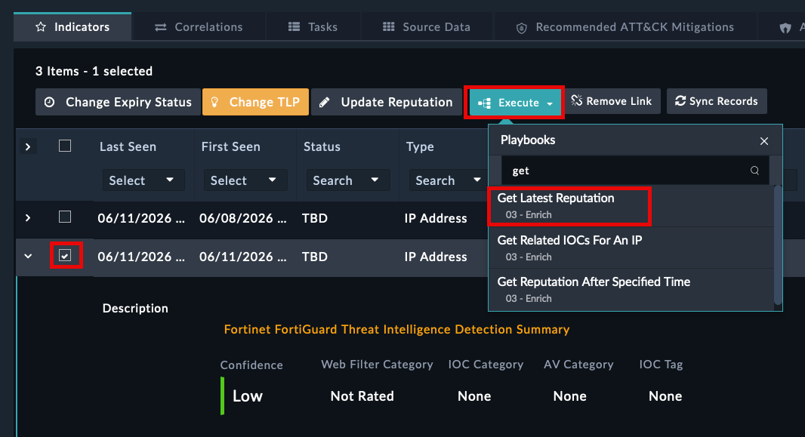
Indicadores extraídos con la valoración expandida


5.2.2. Investigar el caso#
Pasa a Correlations: debería haberse creado un caso. Haz clic en el caso para profundizar en una investigación más detallada.
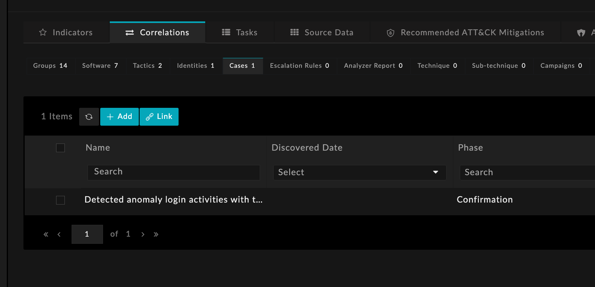
Correlaciones – vista de caso vinculado
Asigna el caso a ti mismo.
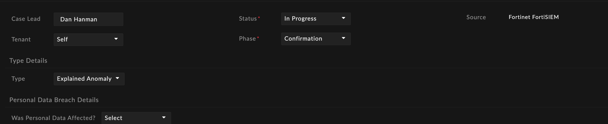
Campo de asignación del caso
En la parte inferior de la pantalla, haz clic en FortiAI – Case Enrichment & Impact Analysis. This can take a few minutes to run.
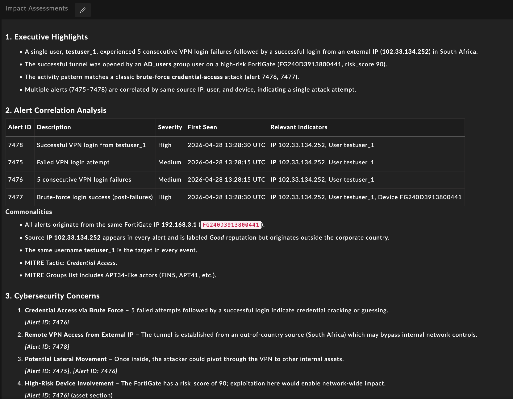
FortiAI Case Enrichment summary output
Nota
Al completarse, debería haber un resumen claro. La función FortiAI Case Enrichment suele ser la más impactante para un SOC: convierte lo que llevaría a un analista 20 minutos de pivotes manuales en un resumen instantáneo.
Desplázate hasta la parte inferior of the screen, haz clic en Correlations, y después en Alerts para revisar todas las alertas relacionadas con más detalle.


5.2.3. Contención – ejecutar un playbook#
Ahora necesitamos decidir los siguientes pasos. Una acción razonable para este escenario (y entorno de laboratorio) es contener (bloquear) la dirección IP pública.
Ejecuta (desde la parte inferior de la pantalla del caso) el playbook “00 – Block Case Source IP”.
Debería mostrarte la IP para seleccionar el bloqueo.
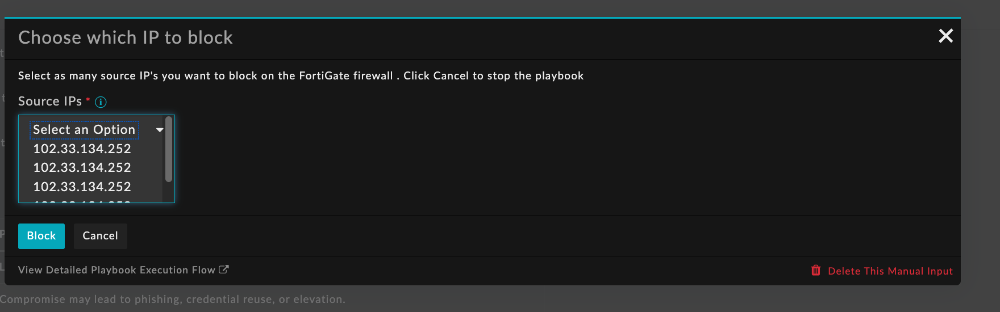
Playbook – selección de IP para la acción de bloqueo
Advertencia
Esta pantalla puede tardar un poco en aparecer. No sigas ejecutando el playbook: crearás una cola en la ejecución de playbooks.
Vuelve a la parte superior de la pantalla del caso y revisa la ejecución del playbook para confirmar que se ejecutó correctamente.
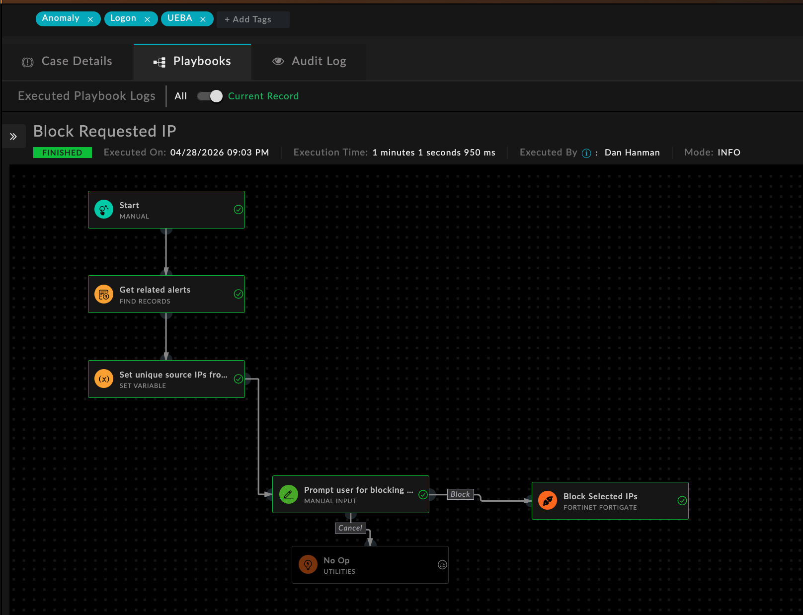
Ejecución de playbooks status confirmation


5.2.4. Cerrar el caso#
Una vez que el playbook se haya ejecutado correctamente:
Change the Case Stage to Resolved
Completa los detalles de cierre
Asegúrate de que todos los elementos pendientes estén cerrados
5.2.5. Reglas de escalado#
Ahora que has trabajado un caso, entendamos cómo se agrupan las alertas en casos automáticamente.
Las reglas de escalado son un concepto usado en SOCaaS y ahora implementado en FortiSOC. Definen la lógica por la cual las alertas se escalan y agregan en un único caso.
Revisa el Reglas de escalado by navigating to Resources / Reglas de escalado and reviewing the “FortiSOC – User login anomaly”. Examine the filter conditions and understand how aggregation works.
Advertencia
No hagas cambios en ninguna de estas reglas.

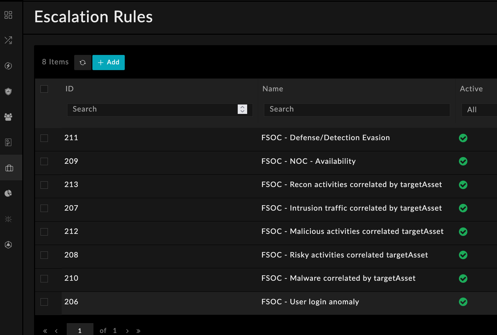
Reglas de escalado list
En este ejemplo, las alertas se correlacionan en un caso si los Target Users coinciden entre alertas y las etiquetas o tipos coinciden. Esto ayuda a evitar que un analista se ahogue con docenas de alertas de inicio de sesión individuales cuando todas forman parte del mismo ataque.

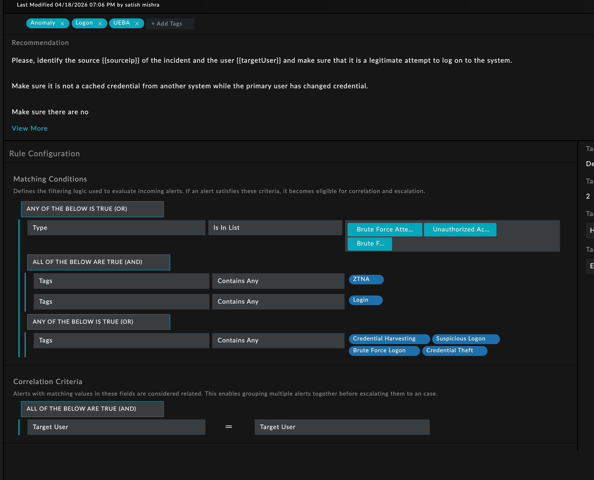
Detalle de la regla de escalado – condiciones de filtro y lógica de agregación
Has recorrido el flujo de trabajo completo de alerta a caso:
Triaje de alertas
Investigación de casos
Enriquecimiento con FortiAI
Ejecución de playbooks
Cierre de casos
Política de escalado de alerta a caso